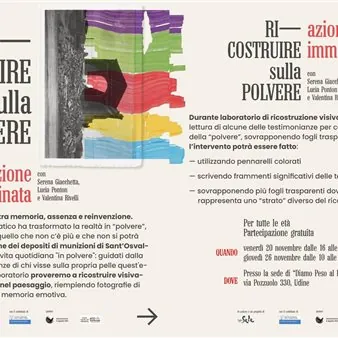

da ven 20 nov a gio 26 nov · dalle 16:00
Ricostruire sulla polvere
𝗨𝗡'𝗔𝗭𝗜𝗢𝗡𝗘 𝗜𝗠𝗠𝗔𝗚𝗜𝗡𝗔𝗧𝗔 condotta da Serena Giacchetta, Valentina Rivelli e Lucia Ponton 𝘃𝗲𝗻𝗲𝗿𝗱𝗶̀ 𝟮𝟬 𝗻𝗼𝘃𝗲𝗺𝗯𝗿𝗲 𝗱𝗮𝗹𝗹𝗲 𝟭𝟲 𝗮𝗹𝗹𝗲 𝟭𝟴 𝗴𝗶𝗼𝘃𝗲𝗱𝗶̀ 𝟮𝟲 𝗻𝗼𝘃𝗲𝗺𝗯𝗿𝗲 𝗱𝗮𝗹𝗹𝗲 𝟭𝟬 𝗮𝗹𝗹𝗲 𝟭𝟮 (il laboratorio è in doppia replica, si può partecipare a uno dei due incontri) 𝗜𝗟 𝗣𝗨𝗡𝗧𝗢 𝗗𝗜 𝗣𝗔𝗥𝗧𝗘𝗡𝗭𝗔 L’esplosione dei…
 Indicazioni
Indicazioni
- Costi e prenotazioni
- Costo non indicato · Prenotazione non indicata
- Programma
- Programma da verificare. Apri la fonte ufficiale per orari e possibili aggiornamenti.
- In caso di maltempo
- Nessuna indicazione specifica pubblicata.
- Note
- Acquisito automaticamente dalla fonte.
L’EVENTO
Descrizione completa
𝗨𝗡'𝗔𝗭𝗜𝗢𝗡𝗘 𝗜𝗠𝗠𝗔𝗚𝗜𝗡𝗔𝗧𝗔
condotta da Serena Giacchetta, Valentina Rivelli e Lucia Ponton 𝘃𝗲𝗻𝗲𝗿𝗱𝗶̀ 𝟮𝟬 𝗻𝗼𝘃𝗲𝗺𝗯𝗿𝗲 𝗱𝗮𝗹𝗹𝗲 𝟭𝟲 𝗮𝗹𝗹𝗲 𝟭𝟴
𝗴𝗶𝗼𝘃𝗲𝗱𝗶̀ 𝟮𝟲 𝗻𝗼𝘃𝗲𝗺𝗯𝗿𝗲 𝗱𝗮𝗹𝗹𝗲 𝟭𝟬 𝗮𝗹𝗹𝗲 𝟭𝟮
(il laboratorio è in doppia replica, si può partecipare a uno dei due incontri) 𝗜𝗟 𝗣𝗨𝗡𝗧𝗢 𝗗𝗜 𝗣𝗔𝗥𝗧𝗘𝗡𝗭𝗔
L’esplosione dei depositi di munizioni di Sant’Osvaldo a Udine nel 1917 trasformò la vita quotidiana “in polvere”. 𝘘𝘶𝘢𝘯𝘥𝘰 𝘭’𝘦𝘷𝘦𝘯𝘵𝘰 𝘵𝘳𝘢𝘶𝘮𝘢𝘵𝘪𝘤𝘰 𝘩𝘢 𝘵𝘳𝘢𝘴𝘧𝘰𝘳𝘮𝘢𝘵𝘰 𝘭𝘢 𝘳𝘦𝘢𝘭𝘵𝘢̀ 𝘪𝘯 𝘱𝘰𝘭𝘷𝘦𝘳𝘦, 𝘤𝘰𝘮𝘦 𝘳𝘪𝘢𝘱𝘱𝘳𝘰𝘱𝘳𝘪𝘢𝘳𝘴𝘪 𝘥𝘪 𝘲𝘶𝘦𝘭𝘭𝘰 𝘤𝘩𝘦 𝘯𝘰𝘯 𝘤’𝘦̀ 𝘱𝘪𝘶̀ 𝘦 𝘤𝘩𝘦 𝘯𝘰𝘯 𝘴𝘪 𝘱𝘰𝘵𝘳𝘢̀ 𝘮𝘢𝘪 𝘳𝘪𝘢𝘷𝘦𝘳𝘦? 𝗜𝗟 𝗣𝗨𝗡𝗧𝗢 𝗗𝗜 𝗔𝗥𝗥𝗜𝗩𝗢
Questo laboratorio si muove tra memoria, assenza e reinvenzione.
Guidati dalla lettura delle testimonianze di chi visse sulla propria pelle quell’evento traumatico, proveremo a ricostruire visivamente il vuoto lasciato nel paesaggio, riempiendo fotografie di archivio con una nuova memoria emotiva. 𝗜𝗟 𝗣𝗘𝗥𝗖𝗢𝗥𝗦𝗢
Saremo guidati dalla lettura di alcune testimonianze dei sopravvissuti all'incidente per completare il vuoto della polvere, sovrapponendo fogli trasparenti alle fotografie: - utilizzando pennarelli colorati
- scrivendo frammenti significativi delle testimonianze lette
- sovrapponendo più fogli trasparenti, dove ogni livello rappresenta uno strato diverso del ricordo Partecipazione gratuita, posti limitati.
𝗜𝗻𝗳𝗼 𝗲 𝗽𝗿𝗲𝗻𝗼𝘁𝗮𝘇𝗶𝗼𝗻𝗶: 𝟯𝟱𝟯 𝟰𝟱𝟲 𝟬𝟴𝟭𝟰
IL PROGRAMMA
Programma e orari
Appuntamenti raccolti dalle fonti elencate. Dove manca un orario, non è ancora disponibile in questa scheda.
Programma pubblicato
- Dal 2026-11-20 al 2026-11-26
INFORMAZIONI UTILI
Prima di partire
- Controllare la fonte prima di partire.
ORGANIZZAZIONE